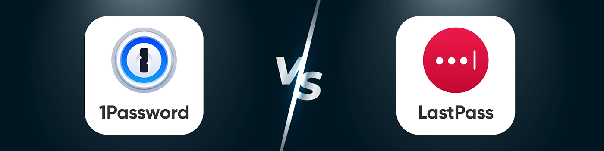
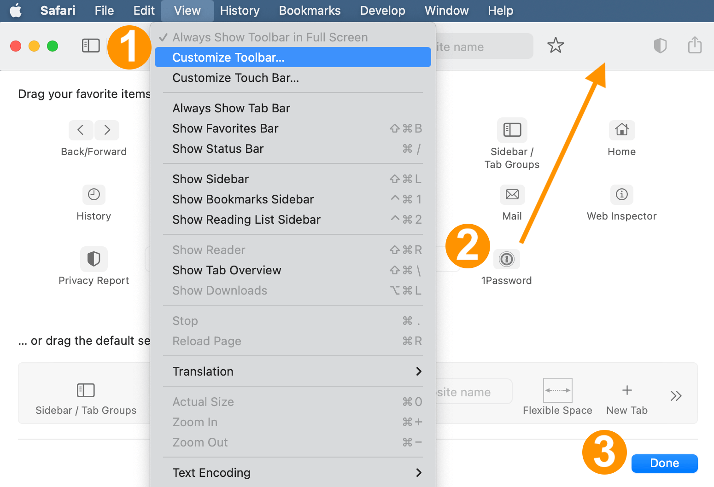

1Password 與 LastPass：哪個更適合你？（2025）
如果你正在尋找安全可靠的密碼管理器，1Password 和 LastPass 無疑是 2025 年最受歡迎的選擇之一。然而，在這兩者之間做出選擇並不總是那麼簡單。你可能聽說過它們的名字，甚至嘗試過其中一款，但仍然不知道哪一款最適合你的需求。
在本文中，我們不會簡單地說"1Password 更安全"或"LastPass 更便宜"。相反，我們將從安全性、功能、易用性和整體價值等各個角度分析每個選項，以便更好地了解它們。
1Password 與 LastPass：概述
自 2006 年推出以來，1Password 就以其安全性和隱私性贏得了良好的聲譽。與許多完全依賴雲存儲的密碼管理器不同，1Password 支持本地存儲、局域網同步，甚至完全離線訪問，從而為用戶提供了更強大的控制力。
相比之下，2008 年推出的 LastPass 一直專注於便捷性和價格實惠。作為一款完全基於雲的密碼管理器，它非常適合那些追求無縫跨設備同步和輕鬆設置的用戶。
然而，完全依賴雲端也存在風險。例如，LastPass 在 2022 年發生的一次重大數據泄露事件暴露了其安全模型中的漏洞，並導致用戶信任度下降。受此影響，到 2024 年，1Password 的用戶群從 1500 萬翻了一番，達到 3000 萬，而 LastPass 的增長卻停滯不前。
那麼，1Password 還是 LastPass，哪個更適合你？這取決於你更看重最高安全性和數據控制，還是更看重便捷性和經濟實惠。
1Password 與 LastPass：密碼安全性
在 1Password 和 LastPass 之間進行選擇時，安全性可能是首要考慮的問題。
安全漏洞的歷史
2022年8月至12月期間，LastPass遭受了一系列網絡攻擊。到11月下旬，攻擊者成功訪問了敏感的保險庫元數據，其中包括電子郵件地址、電話號碼、IP地址和其他客戶詳細信息等未加密信息。
2023 年情況進一步惡化，有報導稱一些黑客破解了用戶的主密碼，並從數十個賬戶中竊取了加密貨幣，損失總額超過 3500 萬美元。
即使在2024年12月，仍有新的違規行為被報導，凸顯了持續存在的安全漏洞。這對於密碼管理器來說尤其令人擔憂，因為它的主要職責是保護你最敏感的信息安全。
他們的核心安全功能
1Password 和 LastPass 均採用 AES-256 位加密技術——這是保護數據安全的行業標準。這種強大的加密技術結合多層安全保護，有助於保護你的密碼免遭泄露和暴力破解攻擊。這兩項服務都採用零知識架構，這意味著即使服務器遭到入侵，你的加密數據仍然無法被外部人員讀取。
為了增強安全性，兩個平台都支持多重身份驗證 (MFA)。你可以使用基於時間的一次性密碼 (TOTP) 以及 Google Authenticator 或 Authy 等應用，以及 Face ID、Touch ID 或 Windows Hello 等生物識別選項。這些額外的步驟使任何人入侵你的賬戶都變得更加困難。
啟用 MFA 後，即使有人掌握了你的主密碼，他們仍然很難訪問你的敏感信息。
為什麼 1Password 更安全？
雖然 1Password 和 LastPass 都採用了強加密技術，但 1Password 在保護數據方面更進一步。它採用了更先進的加密算法，迭代次數更高，其零知識架構也更加穩健。

1Password 真正與眾不同之處在於其獨特的密鑰功能。當你創建賬戶時，1Password 會生成一個僅存儲在你設備上的密鑰。
此密鑰與你的主密碼配合使用，以解鎖你的數據。因此，即使黑客以某種方式獲取了你的主密碼，他們仍然無法在沒有密鑰的情況下訪問你的信息。
由於這一額外的保護層，1Password 在安全性方面具有明顯的優勢。
LastPass 和 1Password：共同優點
作為密碼管理器，1Password 和 LastPass 都提供了一系列強大、便捷的功能。
自動密碼生成
1Password 和 LastPass 都提供類似的核心功能，包括密碼生成和自動填充。它們可以在瀏覽器和移動設備上自動填寫用戶名、密碼、信用卡信息和地址，省去了你每次登錄網站時手動輸入的麻煩。
此外，其靈活的密碼生成器可讓你根據偏好的複雜度、長度和字符類型創建強大的隨機密碼。這些密碼會自動保存到你的密碼庫中，並在所有設備上同步，確保你隨時隨地訪問。
此外，1Password 允許你自定義密碼生成規則，例如指定字符類型、長度以及是否包含混淆字符（例如"O"和"0"），讓你更好地控制密碼安全。
便捷的用戶體驗
LastPass 是一種完全基於雲存儲的架構，具有更快的自動填充響應時間和在大多數網站上更流暢的性能。
相比之下，1Password 更適合日常使用，它的快捷鍵"Ctrl/Command + Shift + Space"尤其好用。
安全賬戶共享
在團隊協作和家庭共享方面，1Password 更加靈活。你可以創建共享保管庫，並設置詳細的角色和權限，從而輕鬆管理哪些人可以訪問哪些內容。
然而，對於家庭使用來說，LastPass 略有優勢 —— 它的家庭計劃最多支持 6 名成員，而 1Password 的計劃最多支持 5 名成員。這使得 LastPass 對於較大的家庭來說更加方便。
總體而言，1Password 和 LastPass 都使密碼管理變得簡單而高效，但各有優勢，這取決於你重視靈活共享還是更大的家庭計劃。
1Password 和 LastPass：附加功能
1Password 的獨特功能：瞭望塔和旅行模式
1Password 提供了幾個突出的功能，使其有別於其他密碼管理器。
Watchtower 是一款內置安全工具，可自動掃描你保存的密碼，查找是否存在安全漏洞，例如重複使用、強度低或被盜用的憑證。它還會監控違規行為，並在你使用的任何網站存在已知安全問題時發出警報，以便你快速更新密碼並保護你的賬戶。

旅行模式是另一項獨特功能，非常適合國際旅行。啟用旅行模式後，你可以在旅行前暫時從設備中移除選定的敏感數據，只保留你需要的數據。這意味著，如果你的設備在國外被檢查、扣押或丟失，隱藏的數據仍然無法訪問。
這些功能使 1Password 成為任何重視高級安全性的人的絕佳選擇，特別是在你的數據可能面臨更大風險的情況下。
LastPass 的獨特功能：輕鬆恢復賬戶
如果你忘記了主密碼，LastPass 可以輕鬆恢復你的賬戶。它提供多種恢復選項，例如短信驗證、電子郵件恢復，甚至生物識別身份驗證。
這種靈活性意味著你可以通過多種方式重新獲得訪問權限，並且不太可能被永久鎖定你的賬戶。
總而言之，1Password 非常適合那些重視數據隱私和安全的用戶，而 LastPass 則是那些重視便利性和用戶友好體驗的用戶的絕佳選擇。
跨設備體驗：1Password 與 LastPass
1Password 和 LastPass 均對主流桌面和移動平台提供強大的支持。
桌面應用程序
這兩款工具均提供適用於 macOS、Windows 和 Linux 的全功能桌面應用程序，安裝簡便，界面直觀。1Password 對 Mac 用戶尤其靈活，提供更深層次的系統集成，帶來更流暢的使用體驗。
1Password 的獨特優勢在於它對舊硬件的強大支持。例如，你可以在較新的計算機上使用 1Password 7，而較舊的設備仍然可以運行 1Password 4。這確保了廣泛的兼容性，讓你輕鬆保障所有設備的安全。
移動應用程序
如果你注重跨設備兼容性，1Password 略占優勢。它支持 iOS 和 Android 系統，甚至還提供 Apple Watch 集成功能——而 LastPass 則不具備此功能。
在 iOS 上設置 1Password 很簡單：只需在系統設置中選擇它作為默認密碼管理器，它就會無縫替換 iCloud Keychain 以在應用程序和瀏覽器中自動填充。
在 Android 系統上，1Password 兼容最新的 Android 15 以及 Android 5 等老版本，確保在幾乎所有設備上都能獲得一致的體驗。這種廣泛的兼容性讓你無論身在何處都能輕鬆訪問密碼。
瀏覽器工具
1Password 和 LastPass 都為 Chrome、Safari、Edge 和 Firefox 等流行瀏覽器提供瀏覽器擴展。
不同之處在於 1Password 支持 Brave 瀏覽器，而 LastPass 與 Opera 兼容。

Web 客戶端
兩種服務都提供基於網絡的客戶端，允許你直接從瀏覽器管理密碼 - 無需安裝單獨的應用程序。
如果你需要在共享或臨時設備上訪問你的密碼，這將特別有用。
總的來說，如果多設備和跨瀏覽器兼容性對你來說更重要，那麼 1Password 可能是更好的選擇。
1Password 與 LastPass：成本
LastPass 提供包含基本功能的免費基礎版，對許多用戶來說，這是一個經濟實惠的選擇。相比之下，1Password 沒有永久免費版，但提供 14 天免費試用，可讓你完全訪問所有高級功能。
說到家庭計劃，LastPass 更划算。其家庭計劃每月 3.90 美元，最多可容納 6 名家庭成員。而 1Password 家庭計劃每月 4.99 美元，最多可容納 5 名成員。雖然 1Password 價格稍貴，但它被廣泛認為是更安全的選擇。

最終選擇：1Password 與 LastPass
總而言之，1Password 是注重數據隱私和高級功能的用戶的首選。它提供更強大的加密功能、靈活的本地存儲選項以及詳細的權限控制，是注重安全的用戶的理想之選。
如果你擔心價格， 一些合租訂閱平台可以讓你以更低的價格使用 1Password 的高級功能。這樣，你無需支付高昂的費用即可享受頂級安全保障。但是密碼安全性存在一定風險，請謹慎考慮使用。
關於 1Password 與 LastPass 的常見問題解答
1. 1Password 真的比 LastPass 好嗎？
兩款密碼管理器都採用了強大的加密技術。不過，1Password 提供了更高級的安全功能，例如"密鑰"，並且在保護用戶數據方面比 LastPass 擁有更好的記錄。
2. 我是否應該不再使用 LastPass？
不，因為 LastPass 已經經歷過多次安全漏洞。建議你將數據遷移到更安全可靠的密碼管理器（例如 1Password），並確保新密碼管理器和雙重身份驗證器已正確設置。
3. 1Password 被黑客入侵了嗎？
不，1Password 旨在抵禦黑客攻擊，並且沒有跡象表明他們可以繞過數據庫的加密。
4. 如果你無法訪問你的 1Password 賬戶會發生什麼？
你可以使用 1Password.com 上的恢復工具包重新訪問你的賬戶。身份驗證通過後，你可以重置主密碼。